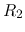
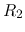
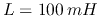
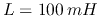
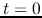
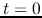
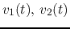
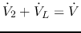
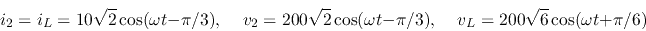
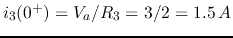

- A crystal oscillator is an electronic oscillator circuit that uses
the mechanical resonance of a vibrating crystal of piezoelectric material
to create an electrical signal with a precise frequency. The crystal can
be modeled by the RLC circuit shown in the figure. Assuming
 can be
approximated to be zero.
can be
approximated to be zero.
- Find the parallel resonant frequency at which the
impedance of the model is maximized.
- Find the series resonant frequency
 at which the
impedance of the model is minimized.
at which the
impedance of the model is minimized.

Solution The total admittance is
- The magnitude of is minimized to zero if
i.e.,
where
This is the parallel resonant frequency.
- The magnitude of is maximized to infinity if
 and the denominator becomes zero. This is
the series resonant frequency.
and the denominator becomes zero. This is
the series resonant frequency.
- In the circuit below,
 with some unknown
peak value
with some unknown
peak value  ,
,  , and . The the RMS value
of acorss  is measured to be 10 V. It is also known that
, and . The the RMS value
of acorss  is measured to be 10 V. It is also known that
 and to be in phase.
and to be in phase.
- Find
 .
.
- Find the RMS values of
 and
and  .
.
- Find the RMS values of
 and
and  .
.
- Find the peak value of .

Solution

As and are in phase (zero angular difference),
the admittance of the parallel combinatiion of the RL and RC
branches is real with imaginary part equal to zero:
For  , we need to have
, we need to have
 , i.e.,
, i.e.,
The impedance of the parallel combination of the RL and RC branches
is
As
,
 . But as
they are apart in phase, we have
. But as
they are apart in phase, we have
 .
We also see that
.
We also see that
 . However, their
phase difference is , and
.
. However, their
phase difference is , and
.
The currents through RC and RL branches are:
But their phase difference is , we have
The voltage across  is
is
 , and
, and
The peak value is therefore

- In the circuit
 ,
,
 ,
,
 ,
,  and
,
,  and  . Find
. Find  ,
,
,
,  , and after the switch is closed at .
(Assume the circuit is in steady state before the switch is closed.)
, and after the switch is closed at .
(Assume the circuit is in steady state before the switch is closed.)
Solution
- In the circuit below, the filter composed of
 , and
between the source and the load is to pass the
fundamental frequency without attenuation but completely
block the 2nd harmonic
. Given , find
and .
, and
between the source and the load is to pass the
fundamental frequency without attenuation but completely
block the 2nd harmonic
. Given , find
and .
Solution Find the total impedance of the filter branch:
When the denominator is zero, i.e.,
 , we get
, the filter is an open circuit. Therefore, to
completely block
, needs to satisfy:
, we get
, the filter is an open circuit. Therefore, to
completely block
, needs to satisfy:
When the numerator is zero, i.e.,
, ,
the filter is a short circuit. Therefore, to pass without
attenuation, nees to satisfy
i.e.,
- In the circuit below,
,
, ,
 , ,and
, ,and
 . Find the
current
. Find the
current  through .
through .

Solution Use superposition. First let .
Next let (open-circuit).
As
, the and form a series resonant
circuit with zero impedance, we have
- In the circuit below,
,
.
It is also known that the RMS values of the three voltages

and across respectively , and
 are the same:
. Find:
are the same:
. Find:
- across the RL and RC branches
- voltages and accross and , respectively,
- currents and through and , respectively,
- the RMS value of across and the RMS value of through
the voltage source,
- and .
Solution
As
, the three currents through , and
are also equal:
But as
 , they form an equilateral trangle:
, they form an equilateral trangle:
where  is the phasor voltage across the RC and RL branches.
The phasor voltages across the three resistors , , and
are respectively:
is the phasor voltage across the RC and RL branches.
The phasor voltages across the three resistors , , and
are respectively:
Also, as , we have
or
but as  , we must have
, and
, we must have
, and
The phasor representations of these voltages are shown below:
As
 and
,
also as is leading by and
is lagging by , we also get
so that
In time domain, we have:

The RMS value of is
As , we have
- In the circuit below,
 , , ,
, , . The circuit is in steady state when
. Find current
, , ,
, , . The circuit is in steady state when
. Find current  through when switch is closed at
.
through when switch is closed at
.
Solution: Current through at is
We have
and .
To find after the switch is closed at , we use
superposition
- alone: Total current through
 :
:
By current divider:
 alone:
alone:
- alone:
Alternative method: , applying KCL to the middle point a:
Solving this we get , and
, same
as above.